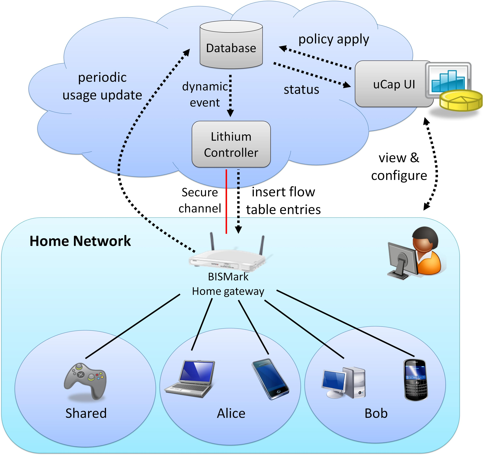

uCap: Usage Cap Management for Homes
uCap is a data cap usage management tool for home network users, which uses OpenFlow and OpenWRT. uCap is implemented on top of the BISMark framework. uCap passively collects and sends data usage information of each device to the back-end database. Home users can monitor their data usage through a web browser, and also set data usage caps (capacity) for each device. When a device's data usage reaches its cap, the connection will be blocked by the uCap framework.
uCap leverages the Lithium OpenFlow Controller, an event-driven controller for software-defined networks.
uCap is part of the BISmark project. uCap runs on top of the BISmark router firmware.
Learn more about uCap

Note: uCap is in alpha stage. We are looking for contributors and participants, but we are not providing technical support for it yet.
Running uCap is easy! Just follow these steps:
- Get a BISmark Router. Visit the BISmark project page for more information.
- Plug it into your cable or DSL modem. You can simply replace your existing home router with BISmark.
- Contact the project BISmark team to opt-in to the uCap experiment.
- Configure your router to enable uCap package. Connect to your router's configuration
page by going to "http://192.168.142.1" with your web browser. Check box is under:
BISmark-->Experiments. - Manage your home network through the uCap management web interface.
Software
- BISmark Github page
- BISmark Developers Site, the BISmark development project management/issue tracker tool.
Papers and Talks
Talks
- Lithium and uCap. Overview talk given at 2011 Open Flow summit, 2011 along with Lithum.
Papers
- "You're Capped!" Understanding the Effects of Bandwidth
Caps
on Broadband Use in the Home
M. Chetty, R. Banks, A.J. Brush, J. Donner, and R. Grinter
ACM CHI
Austin, Texas, May 2012.[.pdf] - Communicating with Caps: Managing Usage Caps in Home
Networks
H. Kim, S. Sundaresan, M. Chetty, N. Feamster, K. Edwards
ACM SIGCOMM (Demo session),
Toronto, Ontario, Canada, August 2011. [.pdf]
People
- Hyojoon Kim
- Sam Burnett
- Srikanth Sundaresan
- Boris de Souza
- Bethany Sumner
- Marshini Chetty
- Stephen Woodrow
- Nick Feamster
- Keith Edwards
We are also grateful to many other contributors who are supporting the project through bug fixes, patches, research, and other improvements. We are indebted to the OpenWRT development team for their continuing support of BISmark.
Other Information
- Georgia Tech Networking Blog, Nick Feamster's blog; some updates here
- SamKnows, a partner commercial organization performing similar testing
- Measurement Lab, a partner hosting measurement servers for BISmark
- UNINA Network Tools
Funding